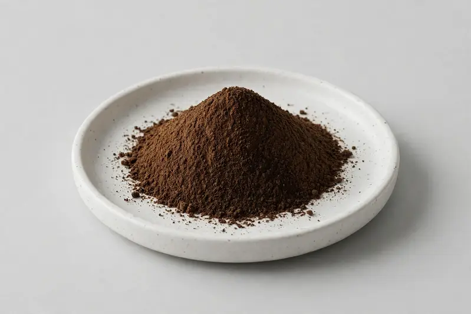

Black ginger — Kaempferia parviflora rhizome extract for metabolic and sports-nutrition formulations.

Overview
Black ginger extract is produced from the rhizome of Kaempferia parviflora, a plant native to Southeast Asia whose polymethoxyflavone content drives current buyer interest. Formulators commonly request defined polymethoxyflavone grades when developing metabolic and sports-nutrition products. As a Xi'an trading company we source through partner producers and confirm feasibility once your target spec is received.
Specifications below reflect commonly requested options in the market — not a stock list. Share your target spec and we'll confirm exactly what we can supply, honestly.
| Specification | Details |
|---|---|
| Botanical identity | Black ginger extract powder |
| Marker compound | Commonly requested spec grades: polymethoxyflavone content (HPLC method); actual specs confirmed on inquiry |
| Appearance | Yellowish-brown to dark brown fine powder |
| Mesh size | Typically 80–100 mesh (confirm per inquiry) |
| Testing | COA/TDS arranged on request; scope agreed per your spec |
Applications
Documentation
We don't claim in-house labs or certifications we don't hold. COA and TDS documents can be arranged on request, and testing scope is agreed against your specification before supply.
FAQ
Related products
L-Citrulline
Key marker: 99%+
View specs →Bromelain (Ananas comosus)
Key marker: 2000-3000 GDU/g
View specs →Papain (Carica papaya)
Key marker: USP activity units
View specs →Bos taurus (milk-derived)
Key marker: Purity and Iron Saturation
View specs →1,7-dimethylxanthine
Key marker: High-Purity Assay
View specs →Send your target spec and volumes — we'll respond with a tailored quotation.
Request a Quote